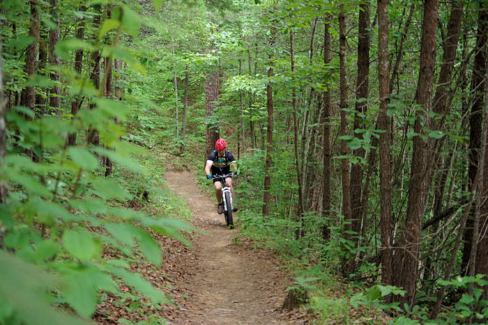

Nestled within the breathtaking Blue Ridge Mountains, Asheville is not only a haven for culture and art but also a paradise for outdoor enthusiasts. With its diverse landscapes, temperate climate, and endless recreational opportunities, Asheville offers something for everyone seeking adventure in the great outdoors.
Blue Ridge Parkway: The Blue Ridge Parkway offers stunning vistas and numerous trailheads. Don't miss Craggy Gardens or Graveyard Fields for unforgettable hikes.
Great Smoky Mountains National Park: This national park boasts over 800 miles of hiking trails, including portions of the Appalachian Trail.

Mountain Biking Trails around Asheville
Mountain Biking: Trails for Every Rider
_______________________________
Bent Creek Experimental Forest: This area features an extensive trail network with options for all skill levels. It's perfect for a leisurely ride or an adrenaline-pumping downhill descent.
Tsali Recreation Area: Located on the shores of Fontana Lake, Tsali offers four challenging loop trails with stunning lake and mountain views.
Little Bear Waterfall climbing walls
Rock Climbing: Reach New Heights
_______________________________
Linville Gorge:Known as the "Grand Canyon of the East," this area offers challenging trad and sport climbing routes amid breathtaking scenery.
Rumbling Bald: Located in Chimney Rock State Park, this popular climbing destination features a variety of routes and boulder problems.